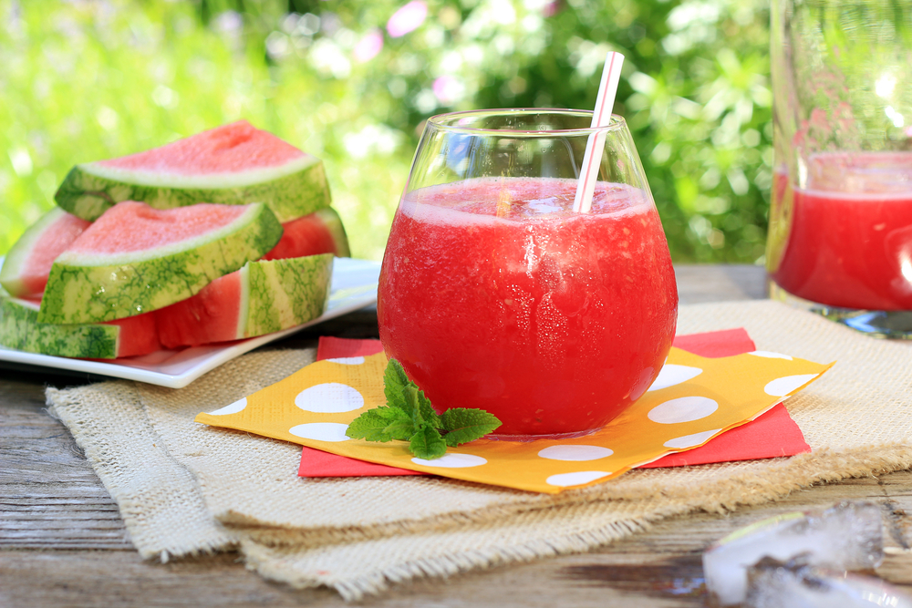
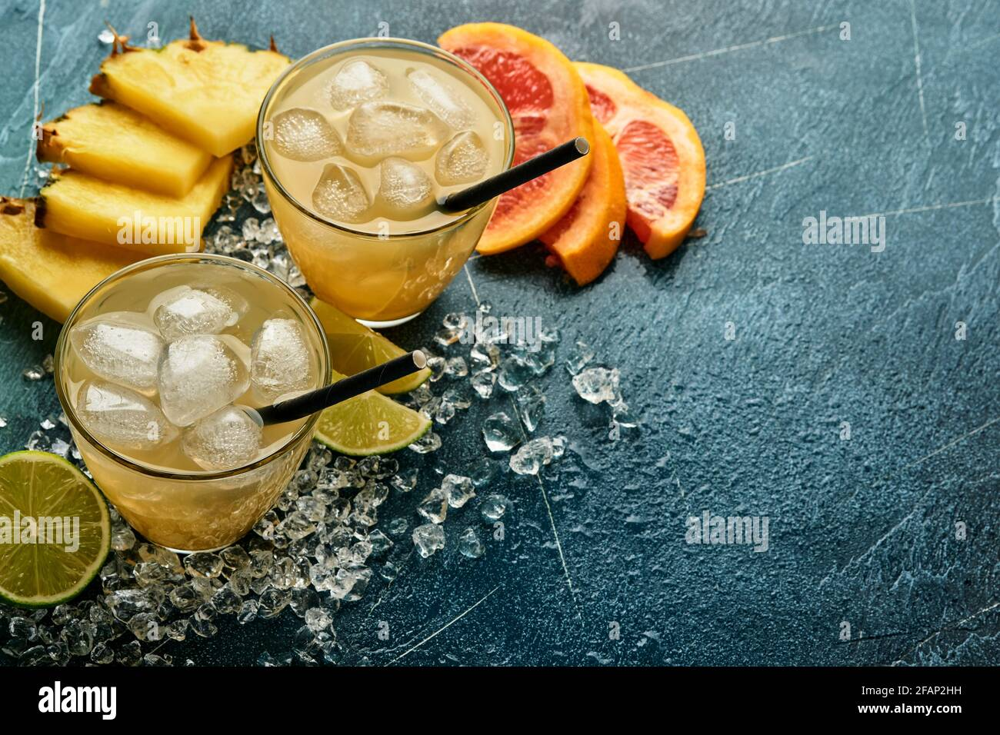
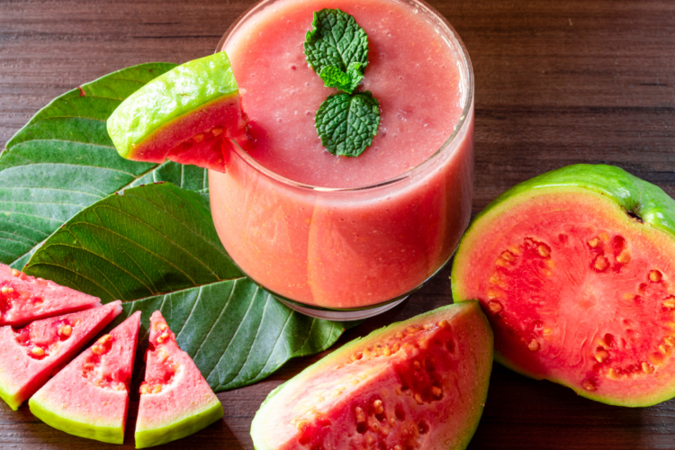
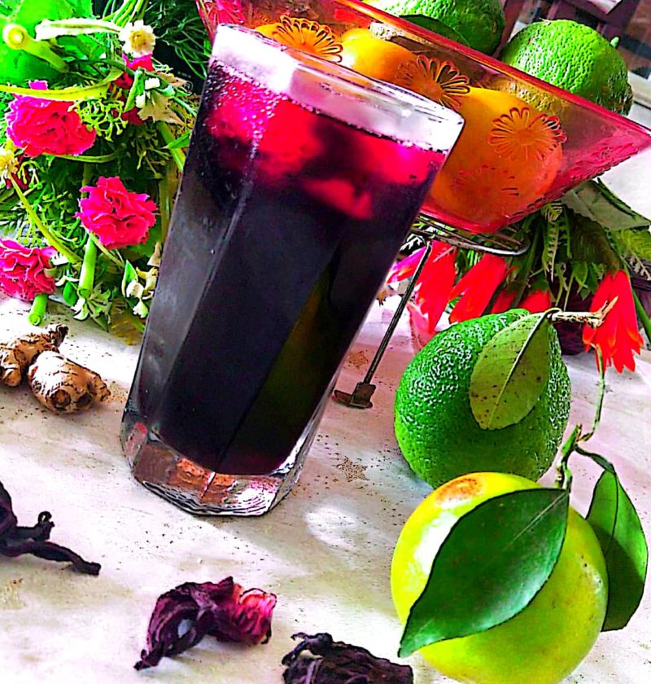
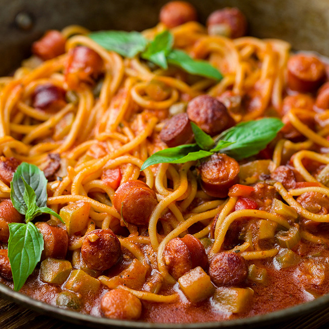

Cocktails🍹et Repas 🍝 pour les pros 😋 !!!
Recettes les plus recente

Poissoin braiser
Par Henok DOSSOU !!!
30:00 mins

jus du fruit de la passion 🤤 +🧊
Par Henok DOSSOU !!!
10:00 mins

Jus de 🍉+ 🧊
Par Henok DOSSOU !!!
10:00 mins

Jus de 🍍+ 🧊
Par Henok DOSSOU !!!
10:00 mins

Jus de Goyave+ 🧊
Par Henok DOSSOU !!!
05:00 mins

Jus de bissap+ 🧊
Par Henok DOSSOU !!!
08:00 mins
Recettes les plus populaires

Aloco poulet
Par Henok DOSSOU !!!
Par Henok DOSSOU !!!
08:00 mins

spaguetti🍝
Par Henok DOSSOU !!!
Par Henok DOSSOU !!!
15:00 mins